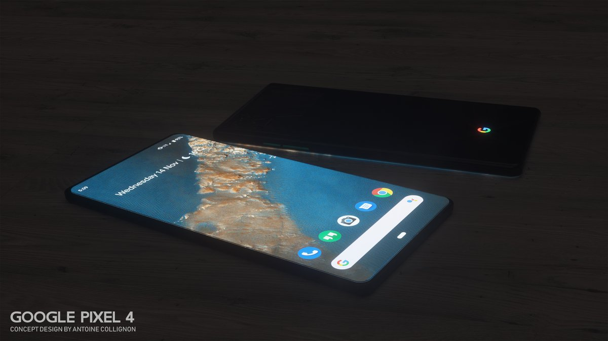
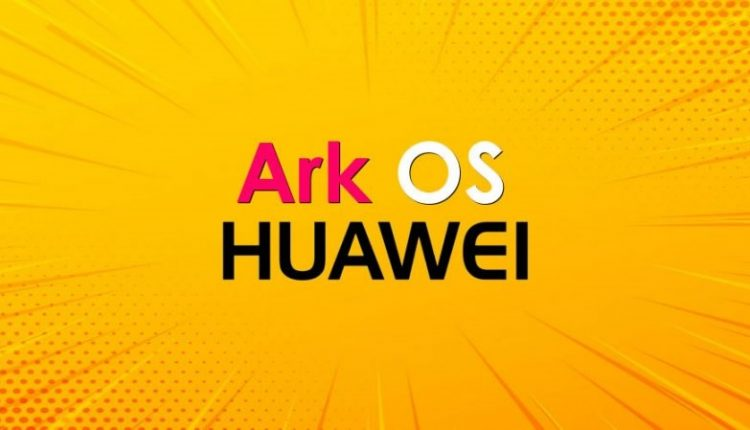
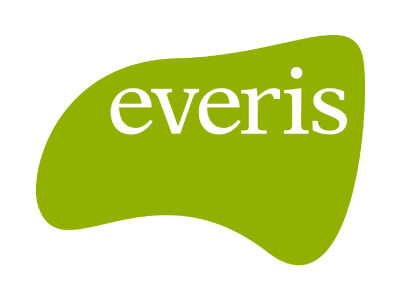

Pixel 4 reportedly spotted days after Google confirms its existence

Google tried to control the narrative around the rampant Pixel 4 leaks that have appeared online over the last few weeks, sharing an official image of the back of the phone on Twitter earlier this week. But not even the search giant can control the leaky ship. There appears to be a new image of the company's forthcoming Pixel now popping up online.
Captured by an anonymous "tipster" in London, on Friday 9to5Google shared images of what looks like the Pixel 4 in the wild, new rear camera square bump and all. No images were shared of the front of the device, which was in what appears to be a fabric case similar to what Google sells for the Pixel 2, 3 and 3A. The site does, however, say that according to their source the phone did have two front cameras and a large "forehead."
In addition to multiple rear cameras, the Pixel 4 is expected to feature a redesigned front that may incorporate Google's Project Soli for allowing hand gestures to control the phone. It's also expected to run Android Q and take advantage of the company's revamped Assistant.Google is expected to fully detail and release the Pixel 4 in October.
Huawei begins trademarking its Android replacement OS — HongMeng

It appears the launch of Huawei's Android replacement, HongMeng, is getting closer. Recently, the second largest smartphone maker in the world began filing to trademark the OS in a handful of countries.
Currently, the list includes countries such as Australia, Canada, Cambodia, the European Union, Mexico, India, Indonesia, South Korea, Thailand and several more.
One of the biggest casualties from the U.S. ban on Huawei was losing direct access to the Android operating system and the Play Store for future devices.
Thankfully, Huawei has had a Plan B in the works for quite some time, working on its very own mobile OS called HongMeng.
HongMeng is expected to be a full Android replacement compatible with phones, tablets, TVs, computers, and cars. It is even supposed to include support for Android apps, making it likely the OS is based on the Android source code.
Although, even with support for Android apps, it will only be able to use third-party app stores such as Huawei's App Gallery. The Play Store cannot come pre-installed on a Huawei phone as long as the U.S. ban is in effect.
Not long ago, there were rumors that devices running Huawei's new OS could launch as soon as October of this year. According to sources, it would first launch on entry-level devices until it is more developed and ready to power Huawei's flagships.
Regardless of how good or bad Huawei's replacement OS is, it will live and die by the apps which are available on it. In countries such as China with access to several app stores, this might not be as big of an issue, but if Huawei wants to compete globally, it's going to have to find a way to provide access to a diverse selection of apps.
Of course, this will all be a non-issue if the U.S. and China can come to some sort of trade agreement, or if the U.S. ban prevents Huawei from producing hardware.
Everis
NTT DATA have launched the second season of their series Wake Up which addresses six key digital focus areas they have identified for their clients to accelerate their digital journey: data and intelligence, intelligent automation, cybersecurity, IT optimization, Internet of Things and customer experience.
The video series “Wake Up 2” will help viewers better understand the company's own focus areas in a futuristic, engaging storyline in which protagonist Adam and his AI assistant Entity work together in all aspects of his life.
While Adam is the lead character in NTT DATA's Wake Up videos, Entity plays the main supporting role. Entity, a fictional Artificial Intelligence voice assistant, provides real-time interaction and access to key technologies, including their six focus areas.
A symbol of the technology’s amazing potential, Entity is the power behind Adam - which also represents NTT DATA’s efforts to position how they provide the power that helps enable their clients’ success through technology and innovation.!

About
Sérgio de la Rosa Pedro
What can I say about me? I discovered my passion for programming only a few months ago. The first code language I've contacted with was Javascript. Gradually I became more interested in the area and decided to enroll in the FLAG's Front-End Developer course. Since that time, learning to code has been a challenging adventure that has allowed me to be here today developing this project. Regarding Everis, my pretensions are to learn from those who already have market experience in order to be less and less rookie in the area and improve my skills. Thanks for the opportunity!

.jpg)